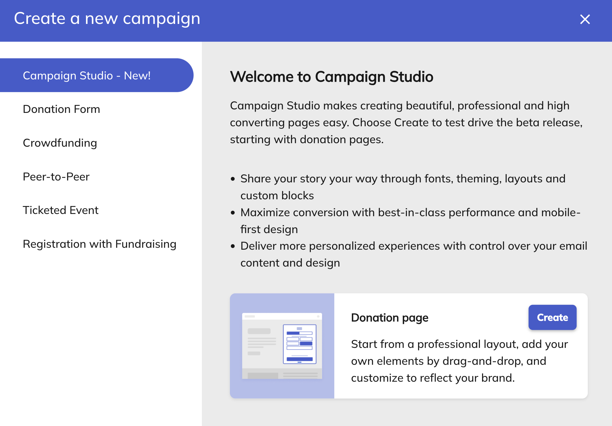
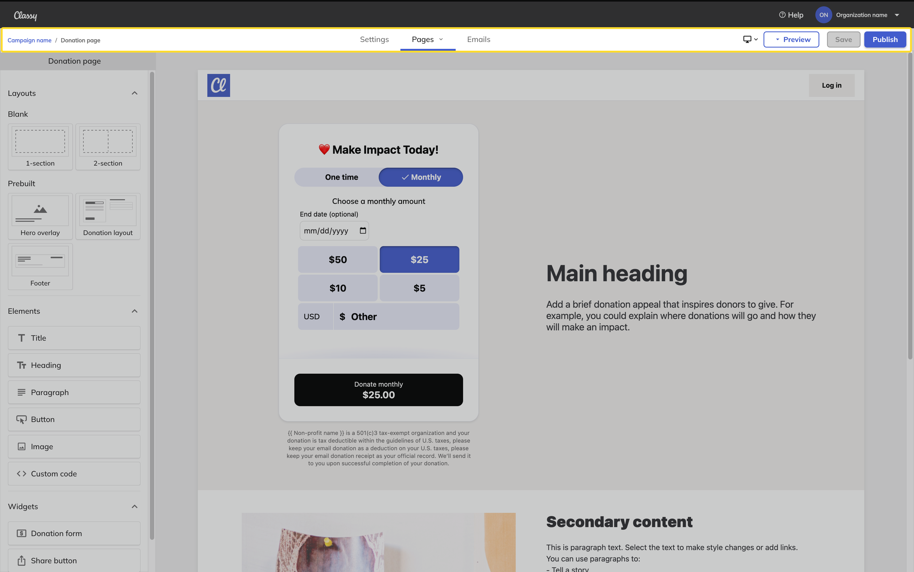
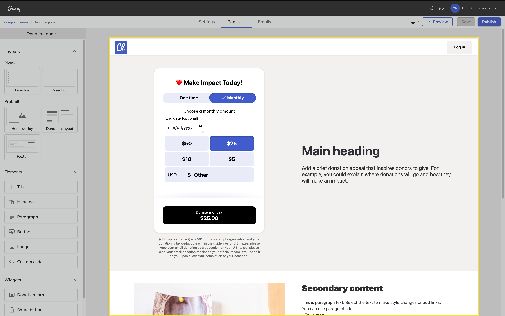
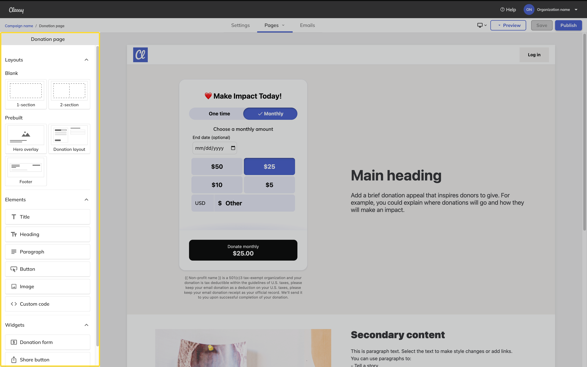
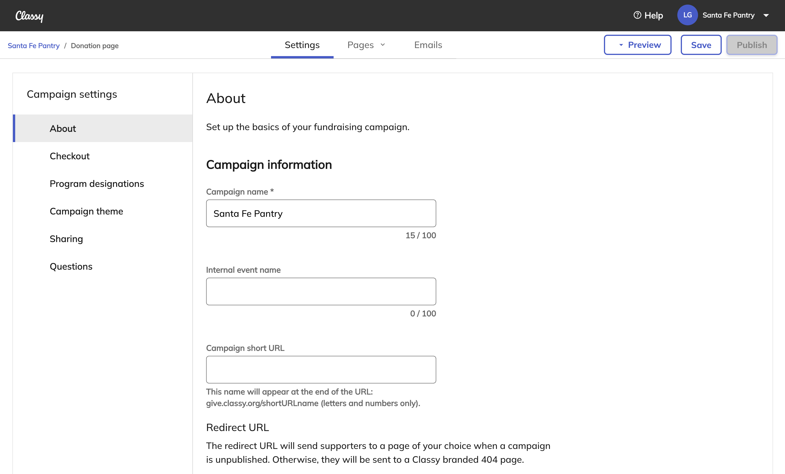
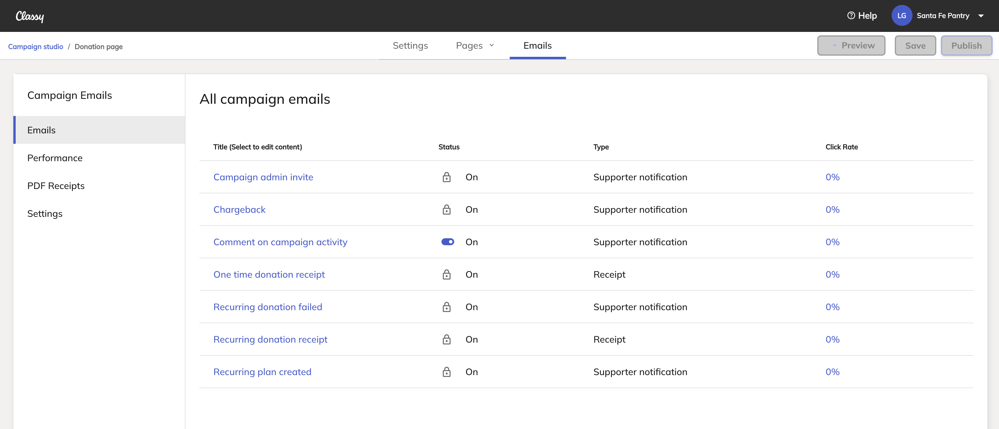

Intro to Classy Studio
Classy Studio lets you build your campaign’s layout, design the look and feel of your pages, and add text, buttons, images, and custom code to create a donation page fit for your needs.
In Classy Studio, you can add or delete sections, drag and drop elements, and place widgets such as a donation form or FAQ where you need them.
In this article, you’ll learn how to:
Want to participate?
Sign up to join the waitlist for Classy Studio.
Access Campaign Studio
To access Campaign Studio for the first time, you need to create a new campaign.
If you already have a Campaign Studio campaign, you can access Studio again by going to the campaign and selecting Edit Campaign.
Create a campaign
To create a campaign using Studio:
- In the menu, select Campaigns
- Select Create new campaign
- Choose Campaign Studio
- Select Create

Note
Campaign Studio is only available for donation pages. We’re currently working on making it available for all campaign types.
Choose a starting point
To help you get started, choose a starting layout for your campaign.
- Donation form above the fold - Best for high-converting pages. A donation form appears without the need to scroll down the page.
- Hero image - Ideal balance between text and imagery. Pair an appeal with an engaging image to draw in supporters.
- Full hero image - A captivating full-screen image tells a story through impactful visuals and layered text
Enter the campaign details
Then, enter some basic information about your campaign, such as:
- Campaign name*
- Internal event name
- Campaign short URL
- Fundraising Goal*
- Default designation
*Required
Apply your brand
Finally, apply your brand. The options include:
- Adding a Header logo and link
- Setting the default font for headings, paragraphs, and buttons
- Setting the primary and secondary colors
Once you create your donation page, you’ll land in Classy Studio, where you can build and customize the rest of your campaign.
Navigate Classy Studio
Classy Studio’s designer consists of the navigation menu, the canvas, and the editor.
Navigation menu
The navigation menu appears at the top of the page. It includes:
- Settings
- Pages
- Emails
- Preview
- Save and Publish

Select Settings, Pages, and Emails to navigate through Classy Studio and customize each part of your campaign.
When ready, you can preview the pages, save your work, and publish your campaign before sharing it with your community.
Note
Classy Studio allows you to view and edit your campaign pages in three different views, Desktop, Tablet, and Mobile. To switch between these views, select the desktop icon in the navigation menu.
Pages
Pages provide the canvas and editor to preview, build, and design your campaign. To switch to a different page, select the Pages tab and choose the page you want to edit.
Canvas
The canvas previews the supporter-facing page. You can select blocks, drag and drop them to move them around, and edit the content directly on the page.

Editor
The editor is how you’ll add new content to the page, including layouts, elements, and widgets. When you select a block in the canvas, the editor will update to show your tools and options.

Settings
Settings provide the basic details of your campaign and other options, including custom questions. Use the Settings tab to find options for setting up and customizing your supporter’s experience.

Learn more about campaign settings
Emails
Emails provide the tools to customize your campaign’s automated emails, view email performance, customize receipts, and other email-specific settings.

Learn more about email settings
Save and publish
Classy Studio breaks saving and publishing into two separate actions. When you Publish a campaign, that campaign is made available on the web to your supporters.
You can also Save a campaign at any time. Saved changes will only appear on the Published version of the campaign. You can view saved changes in your browser's window by selecting Preview in the navigation menu.
Have feedback?
Let us know! Fill out this form to report issues, make requests, or share positive notes.